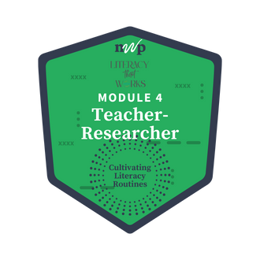

Home

Looking back on this inquiry cycle, I learned much more about my students’ thinking, writing processes, and confidence than I would have noticed through my normal writing lessons. I also learned that it is VERY important to take the time to write more on a daily basis, and making the time is really part of the overall picture of teaching my subject area. For me as far as the kids go, the quicklists and writing sprints revealed differences in their vocabulary use, idea generation, academic language, and writing stamina, while also highlighting how their ownership of ideas increased their engagement. I was especially surprised to see students who typically struggle during writing time experience success and pride when writing from their own thinking. Engaging in this teacher-research process shifted my perspective on classroom practice by helping me see low-stakes, student-generated writing as a powerful formative assessment tool rather than just a prewriting activity. It encouraged me to be more intentional in observing student work and using those insights to guide instruction, grouping, and future lesson planning.

As I leave this module, I am considering how to intentionally increase the rigor of quicklists while still preserving their low-stakes, confidence-building nature. I am also curious about how these strategies can be differentiated to support struggling writers while continuing to challenge students who are ready to expand their thinking. In future teaching, I plan to build on this inquiry by embedding quicklists and writing sprints more strategically into larger units, such as argumentative writing, and by using them as ongoing formative assessments to guide instruction and grouping. I also hope to continue collaborating with colleagues to refine and share these practices, while observing how sustained use of these strategies impacts student growth, engagement, and independence as writers over time.